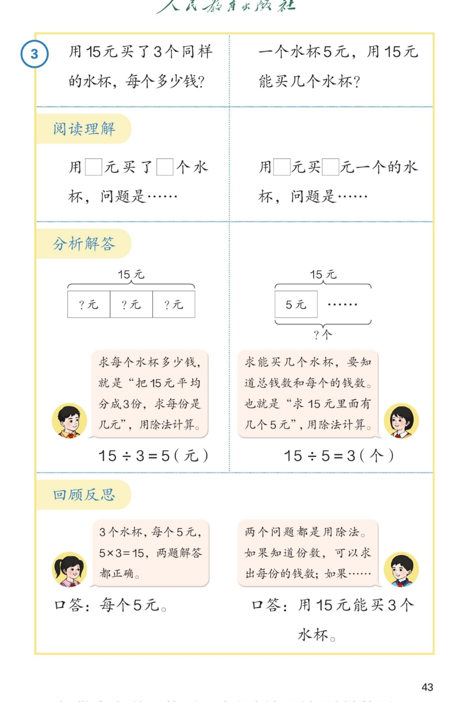

🔊 1~6的表内除法 · 课本第 43 页 · 解决问题（15 元买水杯）
人教版《数学》二年级上册 · 有声图文带读 · 先想后看解析
题数
6
认知
2
强化
3
拓展
1
本页重点
阅读理解→分析解答→回顾反思·两道除法问题
🎧 分两步学：
① 解析教材图片
——纯声音读图，读到哪一块哪一块闪动提示；关键处先倒计时让你思考，再在图片下方给出解析并朗读。
② 分层提问练习
——六道分层题（认知 / 强化 / 拓展），先思考再展开解析、朗读参考答案；这一步不再回到图片。
也可以随时点任意一句话、图上任意一块单独听；点课本文字卡还会展开答案。
教材图片（点块听读，读到哪块哪块闪）

📖 人教版《数学》二年级上册 · 课本第 43 页 · 图片仅供个人学习，版权归人民教育出版社所有
🤔 想一想（点我可跳过）
课本的文字（点句子：听读 + 看答案）
课本第 3 题
两道对比题：15 元买水杯
看答案 ▾
左：
15 元买
3 个
同样的水杯，求
每个多少钱
；
右：
每个水杯
5 元
，15 元求
能买几个
。
阅读理解
先弄清已知条件和问题
看答案 ▾
左：用
15
元买了
3
个水杯，问题是
每个多少钱
；
右：用
15
元买
5 元一个
的水杯，问题是
能买几个
。
分析解答
两道题都用除法：15÷3=5（元）· 15÷5=3（个）
看答案 ▾
左：把 15 元
平均分成 3 份
求每份 →
15÷3＝5（元）
；
右：求 15 元里
有几个 5 元
→
15÷5＝3（个）
。
🌈 一个是"平均分"，一个是"包含分"，都用除法
回顾反思
检验答案 + 总结方法
看答案 ▾
检验：3 个水杯、每个 5 元，
5×3＝15
✓ 两题解答都正确。
口答：每个
5
元；用 15 元能买
3
个水杯。
🌈 知道份数求每份、知道每份求份数，都用除法
分层提问练习（先想后看解析）
🥤
认知
15 元买 3 个同样的水杯，每个多少钱？
看解析
🤔 想一想
解析：
15÷3＝5（元）
。
想口诀：
三五十五
。
🔢
认知
一个水杯 5 元，15 元能买几个水杯？
看解析
🤔 想一想
解析：
15÷5＝3（个）
。
想：
15 里面有 3 个 5
，口诀也是三五十五。
➗
强化
两道题为什么都用除法计算？
看解析
🤔 想一想
解析：
左：把 15 元
平均分成 3 份
，求每份几元；
右：求 15 元里
有几个 5 元
（包含分）。
💡 两种平均分的问题都用除法
✅
强化
怎样检验"每个 5 元"这个答案对不对？
看解析
🤔 想一想
解析：
用
乘法验算
：每个 5 元 × 3 个 ＝
5×3＝15（元）
；
正好等于总钱数 15 元 → 答案正确。
💡 乘法是除法的"验算器"
🔍
强化
比较上页两道题：有什么相同和不同？
看解析
🤔 想一想
解析：
相同：都是
15 元
，都
用除法
，口诀都是三五十五；
不同：左知道
份数
求
每份的钱数
；右知道
每份的钱数
求
份数
。
🌈
拓展
照样子编一道用除法解决的购物问题。
看解析
🤔 想一想
解析：
例1：18 元买 3 支同样的钢笔，每支几元？
18÷3＝6（元）
；
例2：每块橡皮 2 元，10 元能买几块？
10÷2＝5（块）
。
🌈 总钱数、份数、每份的钱数，知道两个就能求第三个
① 解析教材图片
② 分层提问练习
⏹ 停止
纯声音 + 高亮跟随 · 想好才出解析
← 返回导航